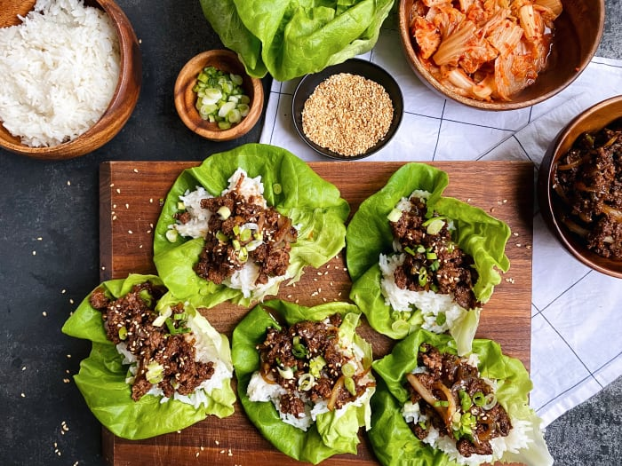
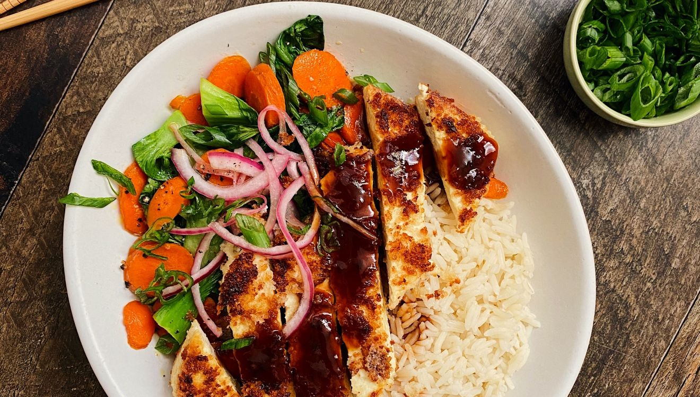
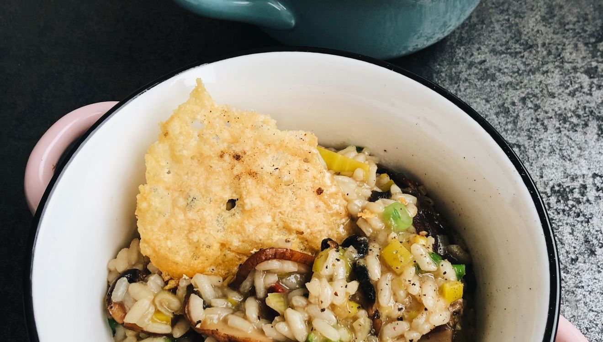
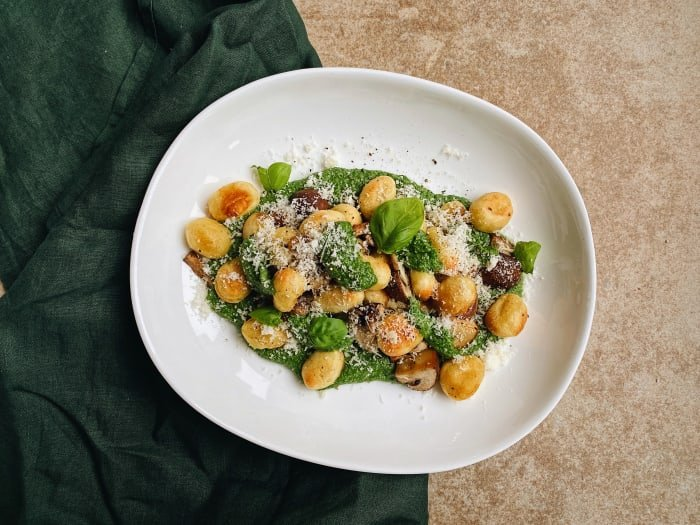

6 recettes Recettes Bol protéiné à la mexicaine 40 minutes Boeuf style BBQ Coréen  25 minutes Pizza Hawaiienne au bacon 30 minutes Tofu croustillant Tonkatsu  30 minutes Risotto aux champignons sauvages  30 minutes Gnocchi croustillants avec champignons  30 minutes